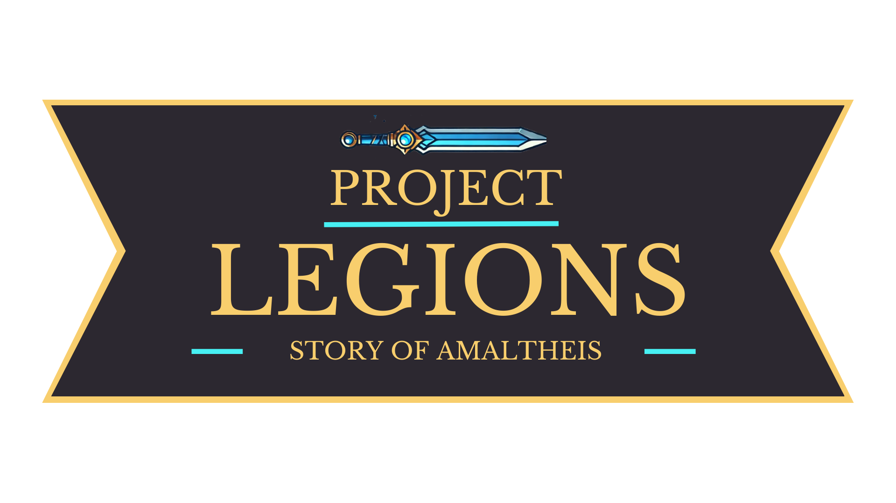

Projets
🎮 Project Legions: Story of Amaltheis – Un nouveau jeu de combat innovant

Contexte : Projet étudiant en équipe, réalisé dans le cadre d'un atelier de création vidéoludique.
Objectifs : Concevoir un jeu de combat (fighting game) innovant mêlant mécanique stratégique et ambiance futuriste.
Missions : Étude des jeux concurrents, conception des mécaniques, développement du gameplay en C++ et Blueprint.
Outils : Unreal Engine 5, C++, Blueprint
Compétences : Programmation, game design, UI/UX, travail en équipe
🗃️ Base de données sécurisée

Contexte : Projet universitaire réalisé en équipe selon la méthode SCRUM.
Objectifs : Concevoir une base de données sécurisée pour la gestion d’inventaire d’une PME.
Missions : Modélisation conceptuelle, rédaction des requêtes SQL, mise en place des rôles et des permissions, documentation.
Outils : MySQL, Git, Lucidchart
Compétences : SQL, sécurité des données, collaboration agile
🕊️ Humanity – Musée virtuel sur Martin Luther King
Contexte : Projet étudiant réalisé en parallèle des cours, avec une équipe motivée autour d’un thème engagé.
Objectifs : Créer un musée virtuel interactif retraçant la vie et les combats de Martin Luther King.
Missions : Recherches historiques, modélisation 3D, scénarisation, développement interactif avec Unity.
Outils : Unity, C#, Blender
Compétences : Histoire, narration numérique, modélisation, travail d’équipe, engagement sociétal
{kind=link}